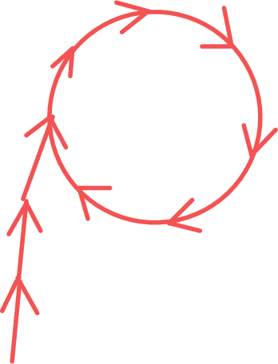
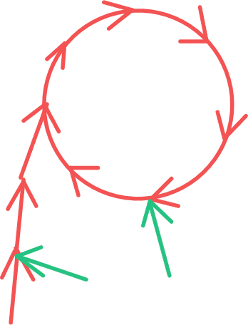
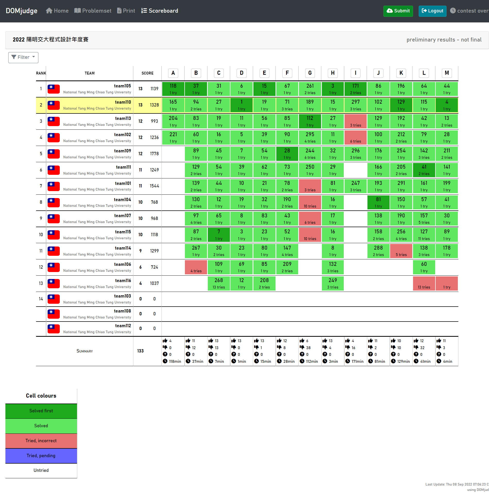

2022 YCPC a.k.a. 交大年度賽 遊記
時間：2022.09.05 -- 2022.09.06
一年一度的校內賽又來ㄌ >////<
大一拿到第三名，去年得了第七名（前六名可以去打 NCPC），結果因為忘記去開會導致來不及遞補到 NCPC 的名額 QwQ。
今年是跟新隊友黃迺絜（coldEr66）還有陳重諺（mmi366127）組隊，希望可以拿到好成績 >w<！
Day -1 ~ Day 0 --- SITCON & 宿舍入住
賽前只有在 8/19 練到 一場。
9/4 恰逢 SITCON，所以就帶著行李出發去台北，可惜因為作息爆炸於是下午一點才到，有很多議程沒聽到。
晚上跟林律穎ㄘ睽違已久的北車武藏拉麵，五月在新竹吃完就確診了 QwQ。
回到交大先去借宿一晚，隔天中午醒來就去辦宿舍入住跟搬行李，發現有兩個室友暑宿。雖然只帶一箱行李但要整理都是灰塵的房間好麻煩 ._.。
晚上在床上從 2:20 躺到 7:30，因為沒帶床墊感覺每一個小時就會醒過來一次，結果起床之後還是超累 = =。
Day 1 --- YCPC 2022
早上吃了麥當勞的雞塊薯餅跟紅茶，在 8:50 左右到校計中報到。迺絜一直裝弱說自己只會倒水。
比賽用的設備是 Windows + VM，一開始只要全螢幕就會一直黑屏，還好比賽中都沒有發生這個問題。
發下密碼跟題本，大概在 DOMJudge 開放之前的半分鐘 lys 就進來說開始了？？？反正先看題目ㄅ～
總共有 \(13\) 題，我們開場的策略就是讓迺絜先打模板，我跟重諺先開前後的題目。不過我看到 pD 的題敘超短就先拿過來讀：
D - Large Number Multiply
- 1 min, pD Correct + 首殺
哈！直接用 python 寫拿到全場首殺，還是久違的 1 min AC >////<。一開始看到分數不是深綠還以為沒有首殺ㄌ。
總之我先繼續看我分到的 pABC，重諺看後面幾題，過一陣子重諺就發現 pM 跟我們 團練的一題 一模一樣：
M - Largest Quadrilateral
在團練時我們使用的是二分搜，不過剛好在團練完的時候我們有看題解裡講到 Brahmagupta's formula 可以在 \(\mathcal{O}(1)\) 時間求解，而且很精簡。
\[\begin{aligned} s &= \frac{a+b+c+d}{2} \\ A &= \sqrt{(s-a)(s-b)(s-c)(s-d)} \\ \end{aligned} \notag\]
- 4 min, pM Correct + 首殺
於是我們自然又拿到了一個首殺 >////<！
我覺得 pA 看起來很像 LCS，但是因為輸入看起來很麻煩所以先放一邊，其他 pBC 都是水題，所以繼續拿了 pEFG 來看。
pE 很水，pF 很經典的感覺所以丟給迺絜想，pG 看起來像子集枚舉裸題。
重諺看 pHIJKL 發現 pH 也很水，於是確認了一下想法就在迺絜把模板打完之後上去寫掉ㄌ：
H - An Astronomer's Task
顯然對 \(|x_0 - x_1|\) 跟 \(|y_0 - y_1|\) 做個 \(\text{gcd}\) 就完事了。
- 15 min, pH Correct
AC 之後換我寫相對最好寫的 pE：
E - Total Number of Segments in All Permutations
本來以為這是數學題，結果看範圍才發現是暴力題，於是好好的 \(\mathcal{O}(n \times n!)\) 水掉了。
- 19 min, pE Correct
賽後才聽說這題有數學解，稍微推了一下發現就只是 \(\frac{(n+1)!}{2}\) OuO。
接著我就繼續寫次好寫的 pC：
C - Spiral of Numbers
整個學科區賽感覺就出來了（X）。
- 27 min, pE Correct
現在才發現當時寫超久 QwQ，也不知道為什麼要寫那麼久。
迺絜和重諺推出 pF 的做法了，所以換重諺上去刻：
F - Fulcrum
我還不知道要怎麼做 :)，不過因為爆 long long 以及把
i 打成 l 導致吃了兩次 penalty。
- 56 min, pF Wrong-Answer
- 61 min, pF Wrong-Answer
- 71 (+40) min, pF Correct
中途重諺 WA 的時候換我上去寫 B：
B - One-way Traveler
有個顯然的 SCC 縮點作法，不過因為 functional graph 的每個點最終都會落在一個環裡面，所以我就從入度 \(0\) 的點做 DFS 計算最長路徑，剩下的都會是環。
- 70 min, pB Wrong-Answer
這時我才發現不只有左圖的狀況，還會出現右圖的樣子，我沒有維護每個點可以走到幾個點才會 WA。
|  |  |
修了一陣子，修好就 AC 了。
- 94 (+20) min, pB Correct
中途迺絜上來打 SCC 的模板，所以說其實我可以直接用 SCC 寫掉這題，而且這題跟 pJ 根本一樣：
J - Exhibition
SCC 縮點 + DAG 最長路裸題，所以重諺就 AC 了。
- 102 min, pJ Correct
現在積著可以寫的題目有 pG 子集枚舉、pK 裸分塊、pL 倒水題，於是我想 pAI 要怎麼做、迺絜想 pK 實作細節、重諺寫 pL：
L - Underground Sewer System
輸入有些毒瘤，不過處理完之後就是確確實實的水題。偷偷譴責迺絜說只會倒水，結果遇到倒水題又不寫。
- 115 min, pL Correct
換迺絜上去寫 pK：
K - Street Light
因為一盞路燈的亮度只會有 \(\mathcal{O}(\sqrt{C})\) 種，所以就對那
\(\mathcal{O}(\sqrt{C})\)
做區間加值。區間加值可以直接用差分 + map + 前綴和做掉。
- 129 min, pK Correct + 首殺
都這個時間了怎麼還有首殺可以拿啊 www。
突然意識到這場比賽有點太過簡單了，才過 \(\frac{2}{5}\) 的時間卻有三隊只剩下三題。
不過也沒有時間多想了，我就上去寫 pG：
G - Gambling
本來我以為計分方法是 \(\sum{\frac{每輪分數之和}{每輪抽卡數}}\)，所以就直接寫出遇到鬼牌就依據 break 掉會不會更好來判斷，但是在範例二就爛掉了。
重看一遍題目就意識到這個問題了，所以就回到角落重新想作法。
這時我突然感覺 pA 可以直接給每個點 assign 根到他的字元所組成的字串並直接套 LCS，於是就把做法丟給其他人驗：
A - Largest Common Ghassan of Two Trees
確定解是好的之後我就開始刻這題，輸入雖然看起來毒瘤但其實卻很好寫，code 也超短 OwO。
- 165 min, pA Correct
接著想到 pG 的分數算法跟比例最短路一樣，好像也能套二分搜的做法上去。在算子集出現的頻率時卡了一陣子，不過大部分的 code 都沒有變，所以馬上就寫完了。
- 189 min, pG Correct
這時只剩下 pI，打算看看計分板的時候發現封版了？結果又發公告說因為有隊伍已經 \(12\) 題所以要封版？？？
總之這時記分板上只有我們是 \(12\) 題。雖然如此，但 ACtame（team105）已經首殺 pI 了，而且我們 penalty 輸慘，感覺第一無望。
I - Isomorphism
在先前看到題目的當下我就想到一種簡化法：紀錄 \(s'\) 跟 \(t\) 內每個字元的出現順序，比對時只要出現順序相同就是能匹配的。當時因為很多細節不會寫所以沒有細想，在把這個方法丟出來之後越來越覺得可行，比對序列可以單純的用 hash，而加入跟刪除字元都可以在 \(\mathcal{O}(|\Sigma|)\) 更新順序以及每個字元對 hash 值的貢獻。
我們三個人一起手忙腳亂的寫 code，迺絜負責整體架構，重諺計算每個字元的貢獻，我更新字元出現的順序。雖然寫的很醜也出很多 bug ，但他至少有在動了！
- 287 min, pI Wrong-Answer
想說是只對一個數字取模導致撞 hash，所以就加了第二個數字，code 整個變超醜 www。
- 293 min, pI Wrong-Answer
我想說是不是我的部分寫爛了，準備打算換成 \(\mathcal{O}(|\Sigma| \lg{|\Sigma|})\) 的暴力計算法，不過他們覺得是模的數字太大才爛掉，於是就從 \(10^{15}+7\) 改成 \(10^9+7\) 就過了！
- 297 min, pI Correct
我還是不知道為什麼 \(10^{15}+7\) 會爛耶 OuO。
這題 hank 的官解是確定性的，而且複雜度不會帶 \(\mathcal{O}(|\Sigma|)\)。本來所有做出這題的四隊都會被 TLE 掉，可惜時限定的不夠緊。
總結
- Rank: 2 / 13
- AC: 13 / 13
- Penalty: 1328

以結果論的話，其實不做出 pI 也是第二名，penalty
會小贏第三名兩分鐘。所以其實我們可以隨便傳一筆 pI
然後提早出場給其他人製造壓力。
很可惜除了 pA 之外好像沒有什麼在賽場上感覺不錯的題目（比完賽當然又多了一題 pI）。
比賽的狀況我感覺前期開局打得還算不錯，但是中期忽略了要考慮實作難易度的問題，浪費了不少時間。
還有一個重要的問題是我沒有在空閒時間先看範測會不會出事，這次的 pB 跟 pG 其實都是看範測就會抓到 bug 的。
最後一個可能不算問題的是沒有用到記分板，雖然有定期檢查記分板，卻幾乎沒有拿到資訊。別人開的題目我們已經在想了；別人都沒過的題目我們也還是照寫。可能是比賽偏水導致把簡單題開掉之後只剩下沒幾題可以想，希望之後團練可以好好利用記分板。
總之，接下來就是 10/22 的 TOPC 及 ??/?? 的 NCPC 了，加油 >////<！
P.S. 聽說去年跟今年的 Regional 只會算參加一場，所以有沒有可能打到六年呢？
P.P.S. 如果 ACtame 去年有拿到票，今年的 Regional 好像還是可以打，而且好像可以再拿一張票（但不能用），是不是代表只要 ACtame 夠強交大第二名就有機會坐享其成？
P.P.P.S. 好擔心 NCPC 的獎金ㄛ，現在是幾乎保底 20k 啦，不過想要拿 50k 甚至是 100k 就得要加緊練習啊 >w<！